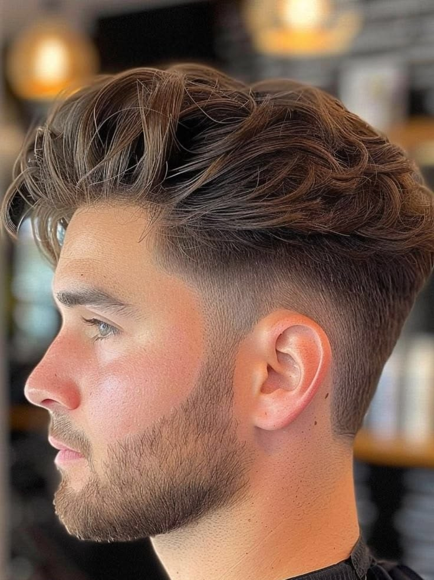
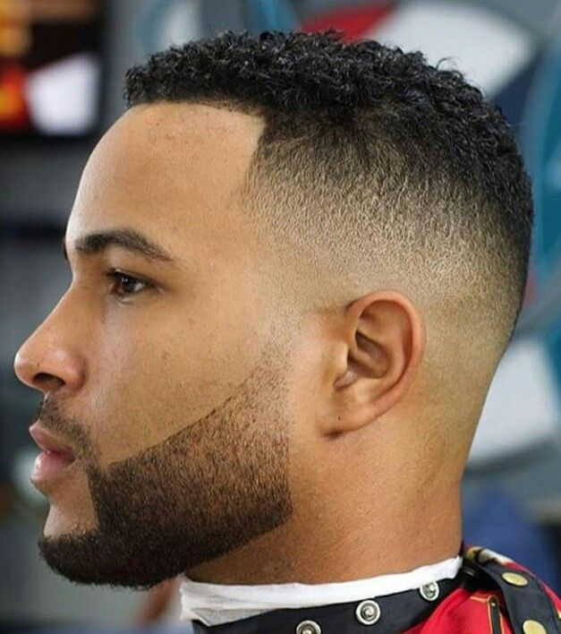
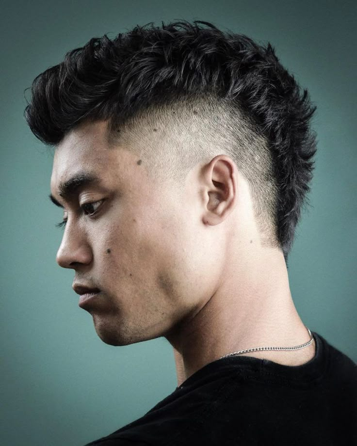
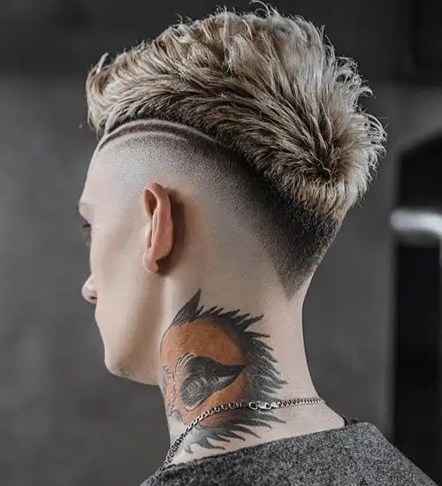
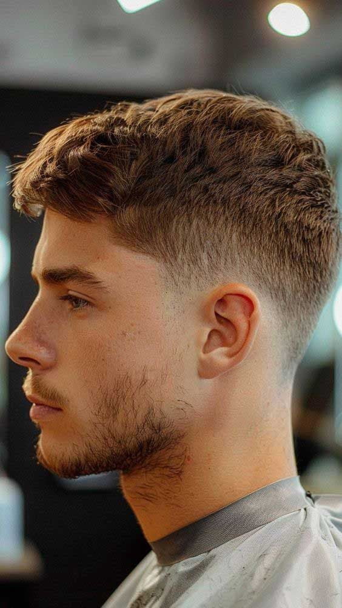
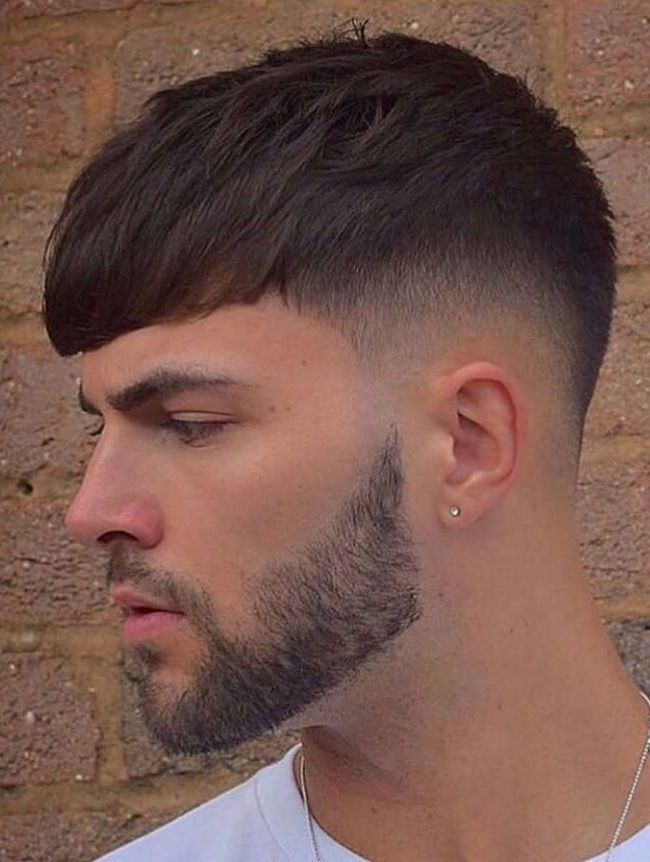

O undercut é um corte moderno que combina estilo e personalidade. Sua principal característica é o contraste entre as laterais e a parte de trás mais baixas ou raspadas, enquanto o topo do cabelo permanece mais comprido. Esse corte pode ser finalizado de diferentes maneiras, como penteado para trás, com textura ou até em estilo moicano. Além disso, sua versatilidade faz com que combine com diversos tipos e texturas de cabelo.
O corte militar é um estilo clássico que nunca sai de moda, perfeito para quem procura praticidade e um visual sempre alinhado. Ele possui laterais bem baixas ou raspadas e o topo curto, garantindo facilidade na manutenção do dia a dia. O comprimento pode variar de acordo com a preferência de cada pessoa, mantendo sempre a aparência limpa e organizada. Esse corte é uma ótima opção para quem prefere um visual mais discreto e tradicional.

O corte masculino no estilo americano é uma escolha clássica que continua sempre em alta. Ele se destaca pelas laterais mais baixas e pelo topo um pouco mais comprido, criando um visual equilibrado, natural e elegante. Esse estilo é ideal para quem deseja unir tradição e modernidade no mesmo corte. Além disso, combina muito bem com diferentes tipos de cabelo, incluindo lisos e crespos.

O moicano é uma ótima opção para quem gosta de um visual mais marcante e cheio de atitude. Esse corte se caracteriza pelo maior volume no centro da cabeça, enquanto as laterais ficam raspadas ou bem baixas. As versões modernas do moicano podem ir desde estilos mais discretos até os mais ousados, com fios desfiados, texturizados ou até com cores diferentes, trazendo ainda mais personalidade ao visual.

O corte masculino em estilo V tem se tornado cada vez mais popular por seu visual moderno e diferente. Ele se destaca pelo desenho geométrico na parte da nuca, formando um “V” bem definido. Esse estilo é indicado para quem busca um corte mais marcante e pode ser combinado com outros tipos, como o fade ou o undercut. Além de trazer mais personalidade ao visual, o acabamento em V deixa o corte mais limpo e bem estruturado, funcionando bem em cabelos curtos e médios, lisos ou cacheados.

O taper é um corte que lembra o fade, mas de forma mais suave e discreta. Nele, o cabelo vai diminuindo gradualmente do comprimento nas laterais, especialmente nas têmporas até a nuca, sem aquela transição mais marcada típica do fade. Esse estilo é conhecido por sua elegância e simplicidade, sendo uma ótima escolha para quem prefere um visual mais clássico e versátil. Ele funciona bem tanto em ambientes profissionais quanto no dia a dia, combinando facilmente com diferentes estilos.

O corte Caesar é um estilo curto e com textura que vem se destacando bastante nos últimos tempos. Ele se caracteriza pela franja curta e pelo cabelo levemente direcionado para a frente. Conhecido pela praticidade, é uma ótima opção para quem busca um visual limpo e fácil de manter no dia a dia. Além disso, combina com diferentes tipos de cabelo e pode ajudar a disfarçar entradas ou sinais de calvície. Para um visual mais atual, o Caesar pode ser combinado com um fade nas laterais, trazendo um toque moderno ao corte, seja em cabelos lisos ou cacheados.